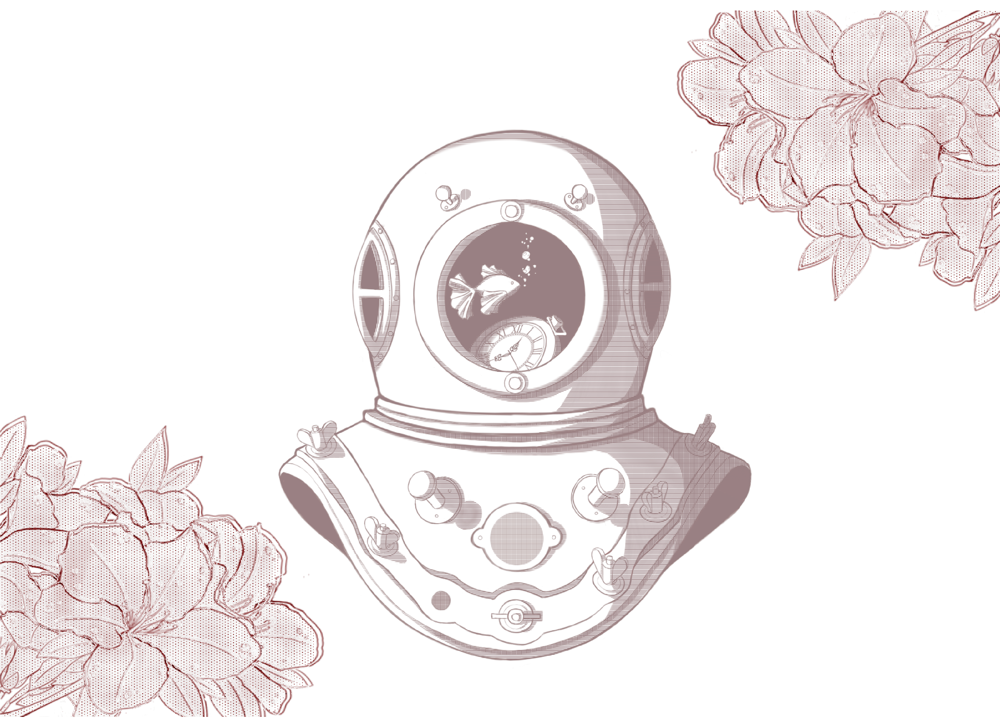

VISUAL COMMUNICATION / SELECTED WORKSSELECTED WORKS / 01—10
WORKS.
IN MOTION
グラフィック、イラストレーション、ブランディング。
それぞれのアイデアがかたちになるまで。
ABOUT / 01
PROFILE.
GRAPHIC DESIGN
VISUAL COMMUNICATION
PRODUCT & CREATIVE PLANNING
アイデアの背景を整理し、
伝わるかたちへ。
グラフィックデザインを基盤に、コンセプトを視覚と言葉で整理し、ブランドや商品、コミュニケーションへ展開することを大切にしています。
ビジュアルを制作するだけでなく、「誰に、何を、どのように届けるか」を考え、企画の意図を具体的な形に落とし込むプロセスに関心があります。
これまでのグラフィック・イラストレーション・ブランディングの経験を活かし、日本でデザイン制作や商品企画、クリエイティブ関連の仕事に携わりたいと考えています。今後はIPを活用した商品企画や、コンセプトから商品化までの一連のデザインにも取り組み、実務を通じて表現の幅を広げていきたいです。
01
VISUAL DESIGN
グラフィックデザイン / レイアウト / ビジュアルコミュニケーション
02
BRANDING & PRODUCT
ブランド表現 / パッケージ / 商品に関わるビジュアル企画
03
CREATIVE PLANNING
コンセプト設計 / 情報整理 / 企画意図の可視化
AREA OF INTERESTコンセプト設計からビジュアル制作、商品への展開まで。